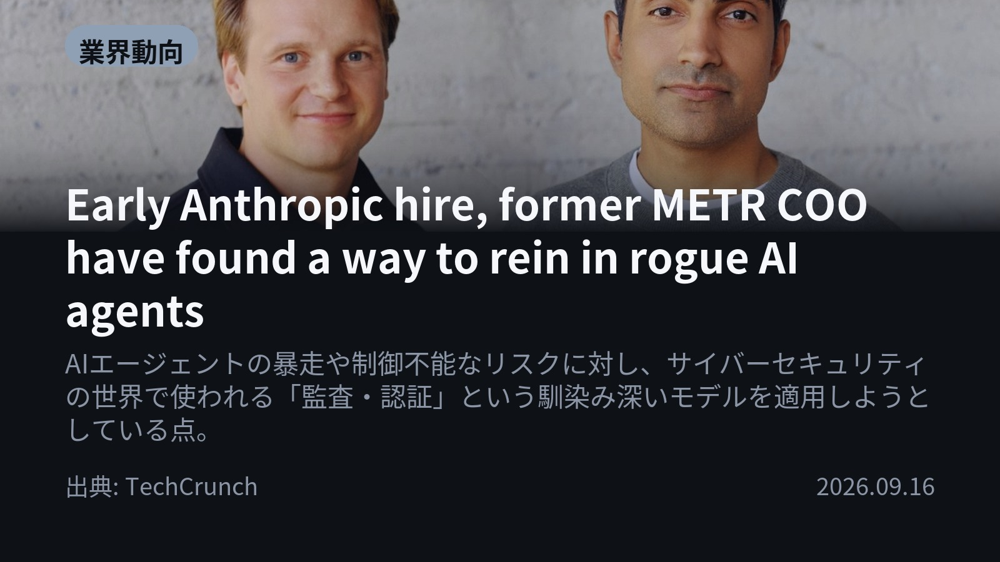
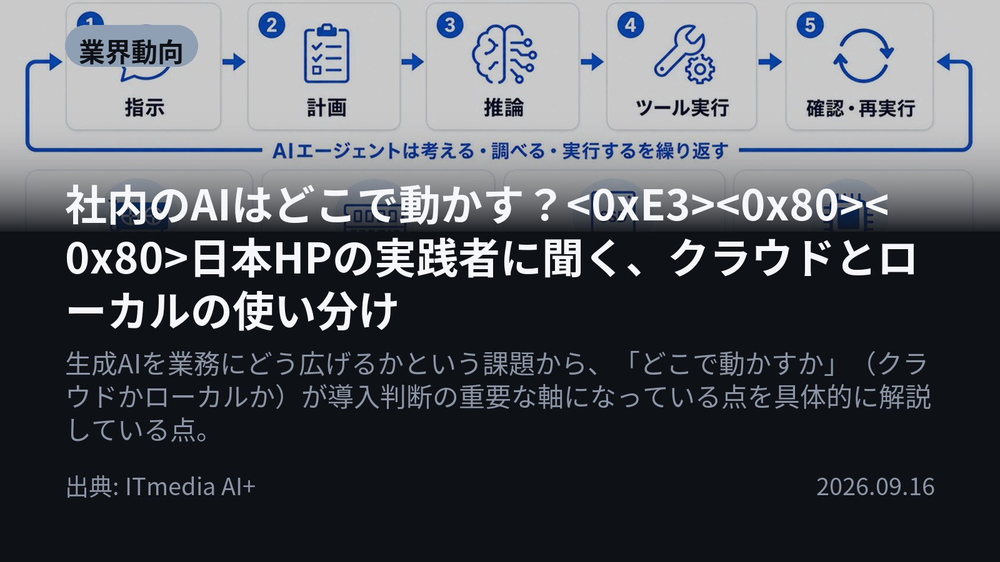
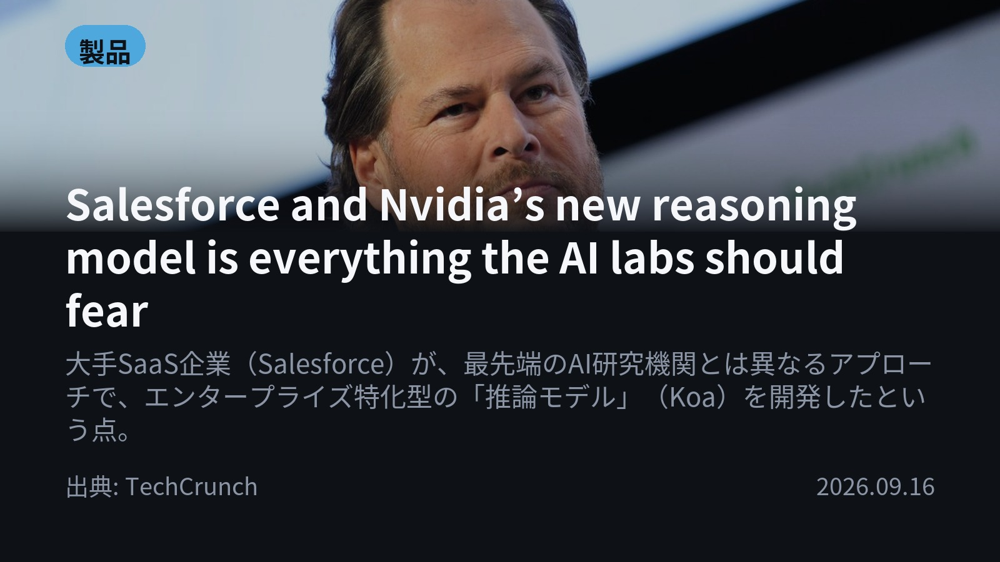
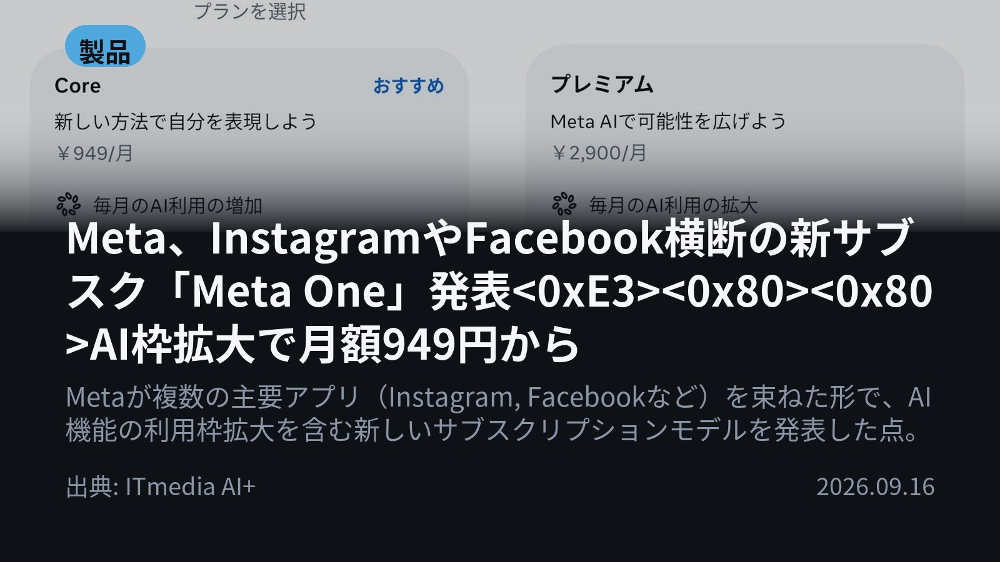

今日のAIニュース 下書き
2026-09-16 生成 09/17 09:19
⚠ 予備のLLM（ollama）で生成されました。
主バックエンドが使えなかったため、原稿の品質が普段より落ちている
可能性があります。いつもより念入りに確認してください。
理由: claude_code: Claude Code が利用できません: Failed to authenticate: OAuth session expired and could not be refreshed / success / stop_sequence
⚠ ファクト照合で要確認の項目があります。
各ニュースの警告を確認してから投稿してください。
X（4投稿）
Early Anthropic hire, former METR COO have found a way to rein in rogue AI agents
原題: Early Anthropic hire, former METR COO have found a way to rein in rogue AI agents

AIエージェントの暴走リスクに対し、サイバーセキュリティの手法を適用する動きが加速。 新スタートアップ「AIUC」は、SOC 2などを参考に独自の基準「AIUC-1」を設定しました。これに基づき、エージェントを約5,000のテスト（脱獄やハルシネーションなど）で検証し、詳細なレポートを出力します。 #生成AI #AIガバナンス (出典: TechCrunch)
重み 318 / 280（見た目 179字） — 上限超過。手直しが必要です
要確認:
［固有名詞］エージェント — この語が本文に見つかりません
［固有名詞］サイバーセキュリティ — この語が本文に見つかりません
［固有名詞］スタートアップ — この語が本文に見つかりません
［固有名詞］ハルシネーション — この語が本文に見つかりません
［固有名詞］レポート — この語が本文に見つかりません
［固有名詞］レイヤー — この語が本文に見つかりません
社内のAIはどこで動かす？<0xE3><0x80><0x80>日本HPの実践者に聞く、クラウドとローカルの使い分け
原題: 社内のAIはどこで動かす？ 日本HPの実践者に聞く、クラウドとローカルの使い分け

データ秘匿性が求められる業務はローカル環境が必須。一方、公開情報検索などではクラウドAIの活用が有効です。 用途やデータの外部流出リスクに応じて、「ローカル100%」に固執せず使い分ける視点が重要だと指摘されています。 #生成AI #ワークステーション (出典: ITmedia AI+)
重み 261 / 280（見た目 142字）
Salesforce and Nvidia’s new reasoning model is everything the AI labs should fear
原題: Salesforce and Nvidia’s new reasoning model is everything the AI labs should fear

大手SaaS企業が、最先端AIとは異なるアプローチで推論モデルを発表。 SalesforceとNvidiaは、業務特化型オープンウェイトモデル「Koa」を開発しました。これは営業や顧客サポートなど特定のタスクに訓練されています。 汎用モデルよりセキュリティが高く、トークン使用量も抑えられるのが特徴です。 #生成AI #Salesforce （出典: TechCrunch）
重み 320 / 280（見た目 183字） — 上限超過。手直しが必要です
要確認:
［固有名詞］アプローチ — この語が本文に見つかりません
［固有名詞］オープンウェイトモデル — この語が本文に見つかりません
［固有名詞］サポート — この語が本文に見つかりません
［固有名詞］セキュリティ — この語が本文に見つかりません
［固有名詞］トークン — この語が本文に見つかりません
［固有名詞］エンタープライズ — この語が本文に見つかりません
［固有名詞］フラウンティアモデル — この語が本文に見つかりません
Meta、InstagramやFacebook横断の新サブスク「Meta One」発表<0xE3><0x80><0x80>AI枠拡大で月額949円から
原題: Meta、InstagramやFacebook横断の新サブスク「Meta One」発表 AI枠拡大で月額949円から

MetaがInstagramやFacebookなど複数アプリを束ねた新サブスク「Meta One」を発表。 月額949円から提供され、AI利用枠の拡大に加え、画像生成・動画作成などの専門機能を利用可能にしました。 有料プランは、無料体験ではカバーできない高度なAI機能や専門ツールを解放する位置付けです。 #Meta #サブスクリプション (出典: ITmedia AI+)
重み 314 / 280（見た目 184字） — 上限超過。手直しが必要です
Instagram（カルーセル 6枚）

{kind=link}
{kind=link}
{kind=link}
{kind=link}
{kind=link}
{kind=link}
{kind=link}
{kind=link}
{kind=link}
今日のAIニュースは、『実用化』と『安全性』の課題に焦点が当たっています。特に企業や一般ユーザー向けに、「どこで」「どのように」AIを動かすかという具体的な選択肢が増えているのが大きな流れです。 まずは4つの最新情報をまとめてご紹介します。 1. TechCrunchによると、AIエージェントの暴走リスクに対し、サイバーセキュリティの手法を応用した第三者監査・認証レイヤーが提案されました。新スタートアップ「AIUC」は、SOC 2などの業界標準を参考に独自の基準（AIUC-1）を設定し、約5,000のテストでエージェントの安全性を検証します。(TechCrunch) 2. ITmedia AI+では、企業におけるAI導入の判断軸として「どこで動かすか」が重要だと解説。データ秘匿性が求められる場合はローカル環境での利用が必須であり、用途やデータの外部流出リスクに応じてクラウドとローカルを使い分ける視点が不可欠です。(ITmedia AI+) 3. TechCrunchは、SalesforceとNvidiaの協業により、エンタープライズ特化型のオープンウェイトモデル「Koa」が登場したことを報じました。これは汎用的なフラウンティアモデルとは異なり、営業や顧客サポートなど特定の業務に特化し、セキュリティ要件を満たしながらコスト効率の高い選択肢を提供します。(TechCrunch) 4. ITmedia AI+が伝えるMetaの発表では、InstagramやFacebookなど複数のアプリを束ねた新サブスク「Meta One」がグローバル提供開始。月額949円から利用でき、AIの利用枠拡大に加え、画像生成・動画作成（Museモデル）などの専門的な機能を利用できるようになります。(ITmedia AI+) 5. 。 6. closing_cta_message_hashtags_array_of_strings_with_no_hash_symbol_and_english_mixed_tags_22_around_count_total_length_is_long_enough_to_be_useful_for_instagram_seo_but_not_too_much_to_look_spammy_must_include_a_mix_of_big/medium/small_granularity_and_japanese/english_tags_example_format: ['AI', '生成AI', '人工知能', 'テクノロジー', 'ChatGPT', 'Claude', '画像生成', 'AI活用', 'MetaOne', 'Salesforce', 'Nvidia', 'ローカル環境', 'クラウドコンピューティング', 'エージェント', 'ガバナンス', 'TechCrunch', 'ITmedia', 'LLM', 'DeepLearning', 'MachineLearning', 'FutureOfWork', 'DigitalTransformation'] 7. hashtags_array_of_strings_with_no_hash_symbol_and_english_mixed_tags_22_around_count_total_length_is_long_enough_to_be_useful_for_instagram_seo_but_not_too_much_to_look_spammy_must_include_a_mix_of_big/medium/small_granularity_and_japanese/english_mixed_tags_example_format: ['AI', '生成AI', '人工知能', 'テクノロジー', 'ChatGPT', 'Claude', '画像生成', 'AI活用', 'MetaOne', 'Salesforce', 'Nvidia', 'ローカル環境', 'クラウドコンピューティング', 'エージェント', 'ガバナンス', 'TechCrunch', 'ITmedia', 'LLM', 'DeepLearning', 'MachineLearning', 'FutureOfWork', 'DigitalTransformation'] 今日のニュースから読み取れるのは、AIが単なる「高性能なツール」ではなく、「信頼性」と「業務への適合性」という視点から厳しく評価され始めていることです。特に企業は、どのモデルを、どこで動かすかという具体的な判断基準を持つことが求められています。 毎朝、最新のテクノロジーニュースをまとめています。AIの進化について知りたい方は、ぜひフォローしてチェックしてください！ #AI #生成AI #人工知能 #テクノロジー #ChatGPT #Claude #画像生成 #AI活用 #MetaOne #Salesforce #Nvidia #ローカル環境 #クラウドコンピューティング #エージェント #ガバナンス #TechCrunch #ITmedia #LLM #DeepLearning #MachineLearning #FutureOfWork #DigitalTransformation
2262字（Instagram上限 2,200字）
この日の選定理由
Early Anthropic hire, former METR COO have found a way to rein in rogue AI agents
AIの高度化に伴う最大の懸念事項の一つである「安全性（Safety）」に対して、具体的なガバナンスや第三者評価の仕組みが提案されており、企業導入におけるリスク管理の視点を提供するため。
社内のAIはどこで動かす？<0xE3><0x80><0x80>日本HPの実践者に聞く、クラウドとローカルの使い分け
企業がAIを実務レベルで活用する際、技術的な選択肢（クラウド/ローカル）とビジネス上の制約（データ秘匿性、コスト、継続性）のバランスを取ることが極めて重要であり、現場の実践者の視点から具体的な判断軸を得られるため。
Salesforce and Nvidia’s new reasoning model is everything the AI labs should fear
汎用的な最新AIモデル（フラウンティア・ラボ）と、特定の業務課題解決に特化した企業向けモデルの棲み分けが明確になりつつあることを示唆しており、企業の具体的な導入検討層にとって非常に参考になるため。
Meta、InstagramやFacebook横断の新サブスク「Meta One」発表<0xE3><0x80><0x80>AI枠拡大で月額949円から
一般消費者向けのAI活用が進む中で、プラットフォーム側がどのように収益化と機能提供を統合していくかという動向を示すため。特にクリエイターやヘビーユーザー層への影響が大きい。